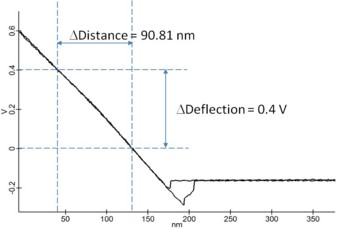
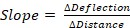
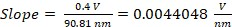
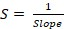
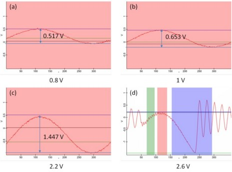

|
初步测量
|
灵敏度 S 和调制因子 U 等参数必须通过额外的测量来确定。请注意，这些额外的测量必须使用与DPFM测量相同的悬臂梁，以及相同的悬臂梁和光束偏转系统对准进行。
对于示例测量，使用了箭头型接触模式悬臂梁（Nanosensors），其标称弹簧常数k为：
|
k = 0.2 N/m |
如 理论部分 所述，灵敏度 S 是进一步计算所需的。该灵敏度描述了激光检测系统的校准。通过分段光电探测器的初始对准，激光斑被调整到四象限二极管的中心（最大Sum信号，顶部减底部（T–B）信号为0，左减右（L–R）信号为0）。一旦悬臂梁接触样品，悬臂梁弯曲，激光斑偏离中心位置。这导致T-B信号不为零，随着悬臂梁弯曲的增加而增加。在力-距离曲线中，记录悬臂梁的弯曲作为压电Z位移的函数。为了校准光电探测器，建议在硬样品（例如硅晶片或玻璃盖玻片）上记录力-距离曲线。在这些条件下，样品的弹性性质可以忽略不计，光电探测器上激光斑的位移仅是悬臂梁弯曲的结果。

图1：在硅晶片上以接触模式测量的力-距离曲线。
力-距离曲线上升斜率计算如下：

(7)对于图5所示的示例，结果为：

(8)有了这个值，就可以将光电探测器的电压变化转换为距离。将灵敏度 S 乘以测量的电压（T-B信号）可将其转换为距离：

(9)对于上述测量，灵敏度为：
|
S = 227 nm/V |
为了计算刚度，需要探针的调制幅度。如果AFM中未集成干涉方法，调制因子U可以通过以下描述的初步测量来确定：
使用 公式（2），可以计算出特定实验的调制因子 U。

图2：在硅晶片上以各种驱动幅度（a）0.8 V、（b）1 V、（c）2.2 V和（d）2.6 V（悬臂梁已经开始脱离样品）测量调制因子时示波器窗口的图示。
对于此示例，表1中列出的参数适用：
表1：测量电压的示例，用于确定调制因子 U。
|
来源 |
ads [V] |
aosc [V] |
U |
|
图6（a） |
0.8 |
0.517 |
0.646 |
|
图6（b） |
1.0 |
0.653 |
0.659 |
|
图6（c） |
2.2 |
1.447 |
0.657 |
|
平均调制因子 U： |
0.654 |
||
一旦更换悬臂梁或重新调整悬臂梁上或分段光电探测器上的激光斑，就必须重新测量力-距离曲线和调制因子U。
表2：从硅晶片上的初步测量中获取的DPFM数据评估所需数据摘要。
|
k [N/m] |
S [nm/V] |
U |
|
0.2 |
227 |
0.65 |